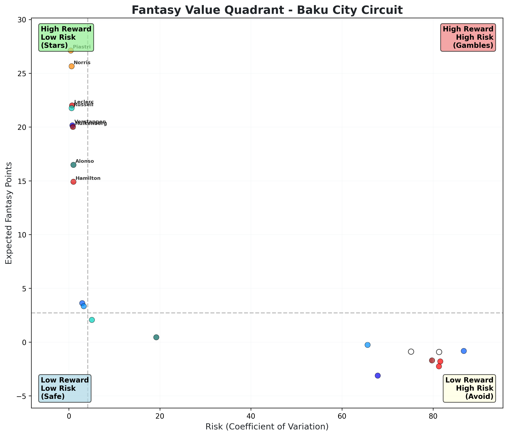

üèéÔ∏è F1 Fantasy Predictor
AI-powered team recommendations using Monte Carlo simulations and real 2025 season data
Azerbaijan Grand Prix
Race Date: 2025-09-19
2x
N. HULKENBERG
Kick Sauber
$12.2M
F. ALONSO
Aston Martin
$10.3M
C. SAINZ
Williams
$8.3M
F. COLAPINTO
Alpine
$7.4M
P. GASLY
Alpine
$7.1M
MCLAREN
Constructor
$34.8M
FERRARI
Constructor
$30.5M
Total Cost: $110.6M
Expected Points: 261.9
Expected Points: 261.9
Last updated: 2025-09-13 13:38 UTC
⚠️ Disclaimer: These predictions are based on statistical analysis and historical data.
F1 results can be unpredictable, so use these recommendations as a guide only.
 Simulated race progression showing how driver positions evolve throughout the race, revealing strategic patterns and performance trends
Simulated race progression showing how driver positions evolve throughout the race, revealing strategic patterns and performance trends
 Comprehensive value analysis comparing price-to-points efficiency across all possible driver and constructor combinations to identify optimal team selections
Comprehensive value analysis comparing price-to-points efficiency across all possible driver and constructor combinations to identify optimal team selections
